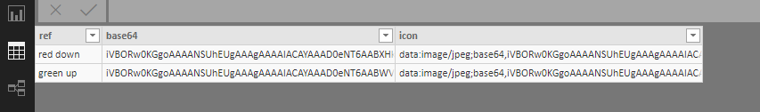
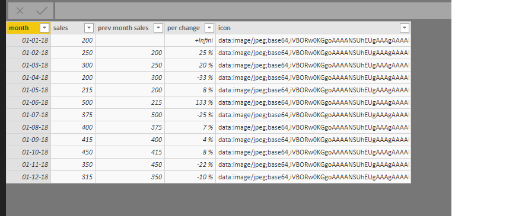
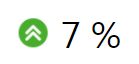

Power BI Custom KPI Indicators¶
This is a quick demonstration of using your own images for a custom key performance indicator. I’ve recently started using Power BI and struggled to follow the instructions in the blogs so hopefully this will be an easy to follow explanation.
First up, create the table stocking the images called “images”. In the first column “ref” contains the image reference and in the second column, “base64”, you’ll stock the image in base64. Use an online converter to convert your image into a string of characters and symbols in base64. In the third column, “icon”, is the value which will be used to display the image. Use the following formula to create the column “icon”:
icon = CONCATENATE("data:image/jpeg;base64,",images[base64])
This step is only necessary if the base64 encoder hasn’t already included this prefix. Below is my table called “images”.
{kind=link}
Next import your data or in my case I created a table called “monthly sales” with a column “months” and “sales” and 12 months of data.
First, calculate the percentage change in two steps to keep it readable. Create a column “prev month sales” using the function LOOKUPVALUE to identify the previous months sales :
prev month sales = LOOKUPVALUE('monthly sales'[sales],'monthly sales'[month], PREVIOUSMONTH('monthly sales'[month]))
Then calculate the percentage difference:
percentage change = ('monthly sales'[sales]-'monthly sales'[prev month sales])/'monthly sales'[prev month sales]
At this point it’s a good idea to change the percentage change column format to “percentage” and adjust the number of decimal places.
Now we can again use LOOKUPVALUE to get the corresponding icon :
icon = LOOKUPVALUE(images[icon], images[ref], IF('monthly sales'[percentage change]>0, "green up", "red down"))
Now the category of this column needs to be changed to “Image URL” otherwise it’ll just display the text. Below is my table “monthly sales”.
{kind=link}
I then created a table to display the arrow and used a tree map to display the percentage change. This allowed me to have more control over the relative sizing of the percentage value. It’s also necessary to use a slicer to filter the dates otherwise Power BI tries to sum all of the percentage changes. Below is my KPI indicator for August.
{kind=link}